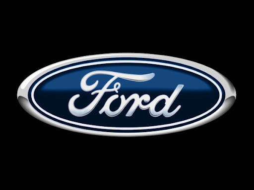
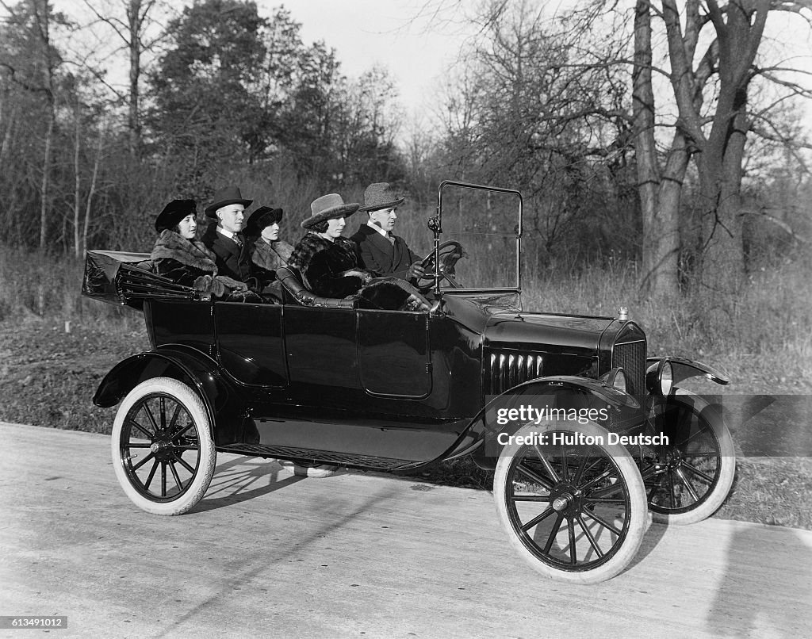
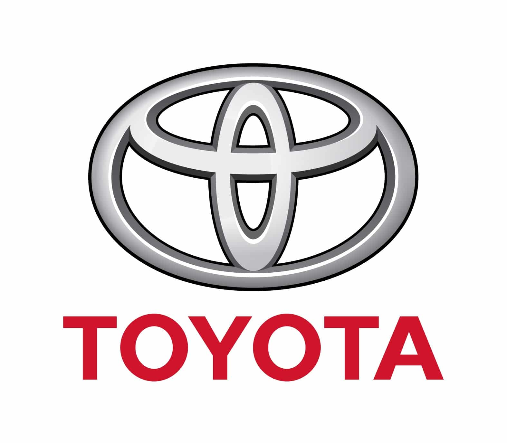
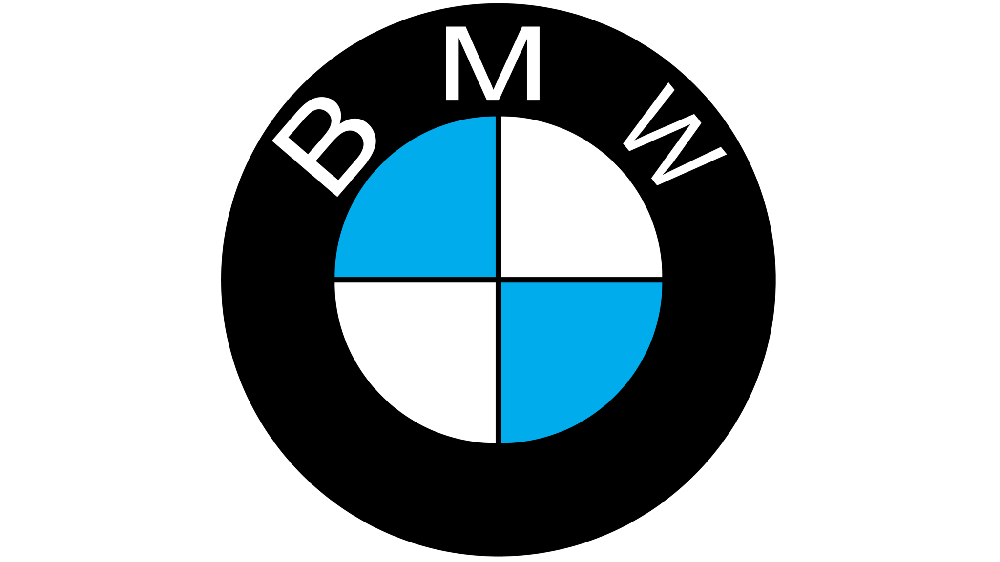
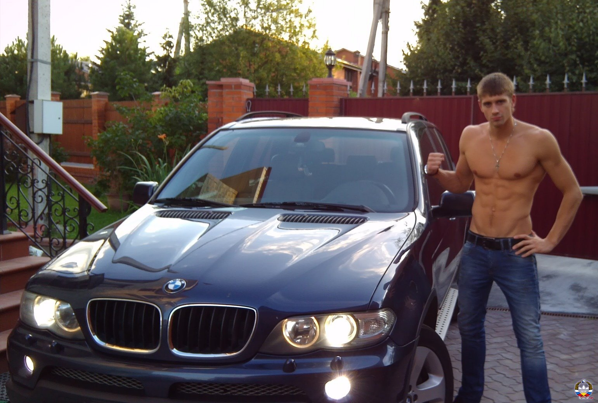

1. Ford

Історія бренду Ford Motor Company почалася у 1903 році в місті Detroit, коли підприємець Henry Ford разом з інвесторами заснував автомобільну компанію з метою зробити автомобілі доступними для звичайних людей. Справжній прорив стався у 1908 році з появою моделі Ford Model T, яка завдяки використанню конвеєрного виробництва стала першою масовою та відносно дешевою машиною у світі.
Моделі
- Ford Mustang — легендарний маслкар із потужним двигуном, агресивним дизайном і високою швидкістю.
- Ford Model T — один із найважливіших автомобілів в історії.
Відгуки
UserFanatFord:
"Ford — це справжня класика. Особливо Mustang: потужність, звук двигуна і дизайн."

FOrdFun:
"Коли сідаєш за кермо Ford Mustang — розумієш, чому цей автомобіль став легендою."
2. Toyota

Історія Toyota почалася у 1933 році. Після Другої світової війни Toyota впровадила "виробничу систему Toyota" (TPS), яка базувалася на принципах ощадливості.
Моделі
- Toyota Camry — еталонний седан бізнес-класу.
- Toyota Land Cruiser — легендарний позашляховик.
Відгуки
ReliabilityKing:
"Toyota — це машина, про яку не треба думати. Просто міняєш масло і їздиш роками."

JDM_Lover:
"Land Cruiser — це танк у фраку. Проїде там, де інші застрягнуть."
3. BMW

BMW (Bayerische Motoren Werke) була заснована у 1916 році. BMW створила концепцію "Ultimate Driving Machine".
Моделі
- BMW M5 F10 — перша "емка" з турбованим двигуном V8.
- BMW M5 F90 — сучасна легенда з системою повного приводу M xDrive.
Відгуки

BimmerFan:
"M5 F90 — це просто космос. Можливість перемикатися між повним та заднім приводом."

OldSchool_M:
"F10 має свій особливий характер. Це була епоха переходу до турбо."